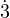
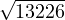

We will crypt a simple message containing the word ’salut’.
In a first step we have to compute the weight list of the differents caracters (meaning an approximation of the ASCII code used in the computer code algorithm).
Giving 0 to ’a’ to 26 to ’z’, we have : 18.0.11.20.19 as the weigth list of the string
Once done, we have to compute the cumulated weigth list. I mean, the list application can be considered as a suit defined by :
un a suit from N to N with the length n ∈ N | ui=ui-2+ui-1
In our case, the computed list is 18.18.29.49.68 We call it vi
At this moment we have to compute the public key ki of the algorithm defined via modulo since the formula :
|
| (1) |
With our example, it gives :
|
| (2) |
We build the full Length key ξ using the formula :
|
| (3) |
The crypting process is ruled by a pseudo-convolution with the given symbol * meaning a point by point multiplication. This newer suit is ruled by vi and ui We call it wi defined by : vi * ui
In our example, it gives :
|
| (4) |
We obtain the suit w=324.0.319.980.1292
At the end we use the Encryption into differents numeric bases to hide the crypting process.
The Base indexes are defined by the key ξ
The list to encrypt is defined by w
The Encryption process will be caled Ξ
Defined by :
|
| (5) |
|
| (6) |
The Encrypted suit is Ξ = 192.0.270.980.684
Its associate key is ξ = 14.10.11.10.14
In this demonstration, we will use a Encrypted list using the Raptor cryptographic algorithm. The terms list is given by :
!018kh”05a3c#8064$12vj%2gai&0605a(67500)0ba30*277a4+25376,2a5db-58136u7!146367”27706#1j68c
The associated key is given as a public key :
2116103428141013
We consider in a first time differents type of caracters set used in the crypting and Encrypting processes.
§= [!,”,#,$,%,&,(,),*,+,-,
Using this informations, we could get a first Terms list to treat called Ξ.
018kh.05a3c.8064.12vj.2gai.0605a.67500.0ba30.277a4.25376.2a5db.5813.36u7.146367.27706.1j68c
A list with length 16 is highlighting We will use the Set X = [a-z] ∪ [0-9]
With χ the length of the Terms list.
Here χ = 16, we could observ than length of key ρ | ρ = χ.
Ξi will represent the respectives terms of the list.
We start the decrypting process by exctracting the key’s Bases index from the cn number suit contained in key. with ci, ∀ i ∈ [0,ρ ], ci ≤ 9
We obtain : ξ = 21.16.10.34.28.14.10.13
Highlighted ξj , Bases index are consistent with the Terms of the suit Ξ
Thereby, with the Correspondance between ξ0 and Ξ0 , we obtain the following chained system resolution.
By drawing up the 21 Base Table, we find :
|
| (7) |
Or by performing a Base transposition since the 21 Base Table, we obtain :
|
| (8) |
By drawing up the 16 Base Table, we find :
|
| (9) |
Or by performing a Base transposition since the 16 Base Table, we obtain :
|
| (10) |
The specified base index ξ2 = 10, so any conversion is superfluous.
By drawing up the 34 Base Table, we find :
|
| (11) |
Or by performing a Base transposition since the 34 Base Table, we obtain :
|
| (12) |
By drawing up the 28 Base Table, we find :
|
| (13) |
Or by performing a Base transposition since the 28 Base Table, we obtain :
|
| (14) |
By drawing up the 14 Base Table, we find :
|
| (15) |
Or by performing a Base transposition since the 14 Base Table, we obtain :
|
| (16) |
The specified base index ξ6 = 10, so any conversion is superfluous.
By drawing up the 13 Base Table, we find :
|
| (17) |
Or by performing a Base transposition since the 13 Base Table, we obtain :
|
| (18) |
The Base transposition done, we could reverse the key to obtain the rest of the list.
We can use the following definition :
ρ is the length of the key ξ since Initialisation Section.
We go to compare the ρ length of ξ with χ the length of Ξ.We have χ=2.ρ
We will use the following terms :
To rebuild the missing half key, we go to reverse ξ with the following syntax
|
| (19) |
Once the full key rebuilded from ξ, we could transpose again the rest of the list as step 1.
By drawing up the 13 Base Table, we find :
|
| (20) |
Or by performing a Base transposition since the 13 Base Table, we obtain :
|
| (21) |
The specified base index ξ9 = 10, so any conversion is superfluous.
By drawing up the 14 Base Table, we find :
|
| (22) |
Or by performing a Base transposition since the 14 Base Table, we obtain :
|
| (23) |
By drawing up the 28 Base Table, we find :
|
| (24) |
Or by performing a Base transposition since the 28 Base Table, we obtain :
|
| (25) |
By drawing up the 34 Base Table, we find :
|
| (26) |
Or by performing a Base transposition since the 34 Base Table, we obtain :
|
| (27) |
The specified base index ξ13 = 10, so any conversion is superfluous.
Or by performing a Base transposition since the 16 Base Table, we obtain :
|
| (28) |
By drawing up the 21 Base Table, we find :
|
| (29) |
Or by performing a Base transposition since the 21 Base Table, we obtain :
|
| (30) |
We finnaly obtain the following numeric suit :
13226.23100.42689.56746.16544.67500.25886.73818.25376.105445.116063.125875.161542.373266
To continue the decrypting process, we know the suit increasing by recurrence. We can resolve the polynom using logic, we call it Ch.
Chn = y2+(y′2+(y′′2+...+y(n)2)).y + c =0
The recursive injection of a polynome is resolvable uniquely using positive real roots.
With this definition, we will not keep cases with △≤ 0
In the last part of the demonstration, we will use the Chain Polynoms resolution algorithm defined by :
We gonna initialize the procedure with :
y2 = Ξ0⇐⇒y =  = 115
R0 = 115
y2 - 115.y - 23100 = 0
x = 220 - 115 = 105
R1 = 105
y2 - 220.y - 8064 = 0
R2 = 252 - 220 = 32
y2 - 252.y - 42688 = 0
R3 = 368 - 252 = 116
y2 - 368.y - 56745 = 0
R4 = 485 - 368 = 117
y2 - 485.y - 16544 = 0
R5 = 517 - 485 = 32
y2 - 517.y - 67500 = 0
R6 = 625 - 517 = 108
y2 - 625.y - 25896 = 0
R7 = 664 - 625 = 39
y2 - 664.y - 73817 = 0
R8 = 761 - 664 = 97
y2 - 761.y - 25376 = 0
R9 = 793 - 761 = 32
y2 - 793.y - 105444 = 0
R10 = 909 - 793 = 116
y2 - 909.y - 116622 = 0
R11 = 1023 - 909 = 114
y2 - 1023.y - 125874 = 0
R12 = 1134 - 1023 = 111
y2 - 1134.y - 146367 = 0
R13 = 1251 - 1134 = 117
y2 - 1251.y - 161542 = 0
R14 = 1369 - 1251 = 118
y2 - 1369.y - 373266 = 0
R15 = 1602 - 1369 = 118
we can conclude using a simple ASCII table and get letters from the obtained numeric suit.
R={115,105,32,116,117,32,108,39,97,92,116,114,11,117,118,233}
ASCIIR={s,i, ,t,u, ,l,’,a, ,t,r,o,u,v,é }
We can get the final decrypted string : ”si tu l’a trouvé”